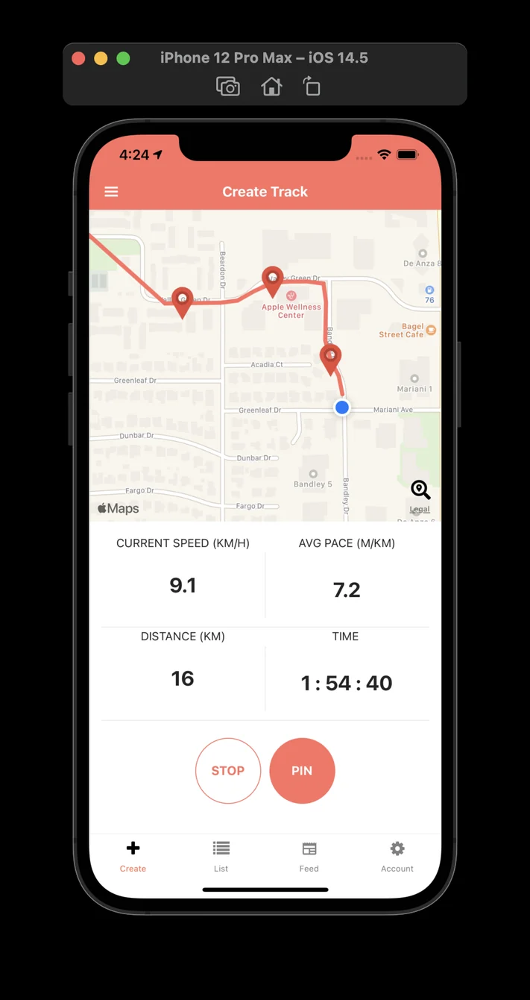
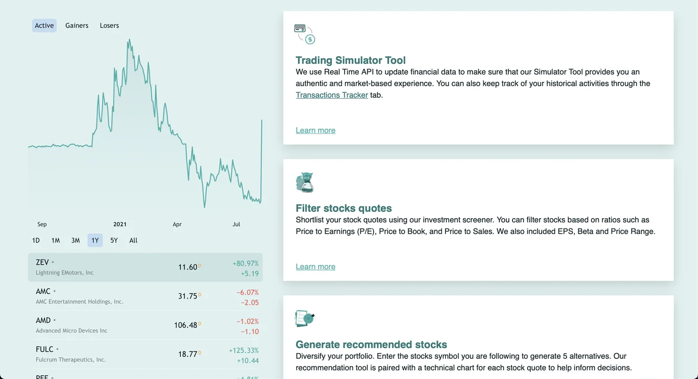
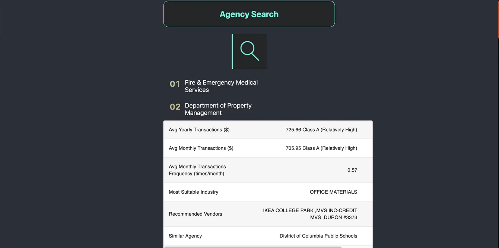
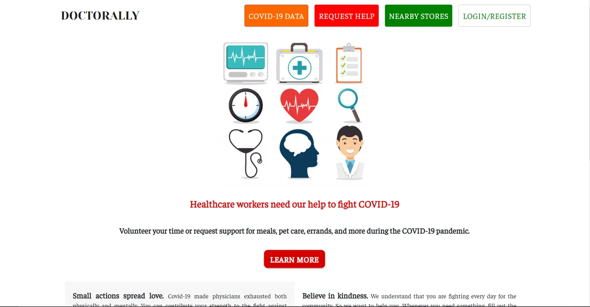

My name is Quang Nguyen. I am currently a rising junior majoring Computer Science in Rice University. I have just finished my SWE summer internship at Meta in the Menlo Park office. I have experiences in fullstack developement in both web and mobile. I developed software and applications in a variety of fields from medical and health to stock market data. Welcome to my portfolio !
Stars on Reels - Facebook Reels
- When: May 2022 - Jul 2022
- Where: You guys can check out this new feature by opening any Facebook Reels on the Web!
- What is this project: This is my intern project at Meta this summer. I created unified interface buttons and real-time transaction for Stars (creator's appreciation) in Facebook Reels. I have just launched this feature and hopefully you guys can experience this amazing new features!
Hatch - Rice University Course Planner
- When: Apr 2021 - Present
- Where: You guys can check out this product for Rice Apps (if you are Rice students) here. I also wrote a post about this experience remember to check it out.
- What is this project: Hatch is a course scheduler for Rice University and it has been used for over 2 years by the students. However, we want to take a step further and improve Hatch. Thus, we added Degree Planner which allow students to schedule their 4 year degree plan with ease. Also, we added course evaluations which help students to quickly see the evaluation for a course.
Dashboard: Track your training - Mobile Application
- When: Apr 2021 - May 2021
- Where: Dashboard: Track your training is available on App Store and Google Play Store. Go download it here !
- Additional Information: check out this Post
- What is this project: DASH across your favorite route, pin the location of new eateries, and share your favorite running selfies on the BOARD! Taking inspiration from this simple wordplay, I developed DASHBOARD: a free sports management app with a friendly UI design that accurately records your training routes while helping you pin locations at ease and share your achievements with the DASHBOARD network.

Nerd Investor
- When: Feb 2021 - Apr 2021
- Where: http://stocksapp-72382.web.app
- What is this project: I worked with my partner [name omitted] to create a stock screener for Vietnamese and US companies. The product has features such as recommend stocks, filter stocks quotes and simulate real-time trading.

Link - Rice Datathon
- When: Feb 2021
- Additional Information: check out this Post
- What is this project: Given the wealth of transaction data provided by Bill.com, we sought to identify similar agencies and vendors. Specifically, our goal was to identify a quantitative method of measuring similarity among vendors and agencies in order to make custom-tailored recommendations.
- Where is it: We eventually won First Place in the Bill.com Track and received really cool prizes from the company. You guys can check out the Github

Messaging Platform
- When: Dec 2020
- Where: https://todoapp-aaff8.web.app.
- Additional Information: check out this Post
- What is this project: This is a real-time messaging platform based on the functions of Facebook Messenger (or a Messenger Clone). You can make friend requests and chat with each other right on the web. You can also change avatars, create group conversations, upload images.
- Where is it: You can look at the source code of the project here Github
NextStep - Rice Apps - realtime SMS-bot
-
When: Aug 2020 - Mar 2021
-
Where: Rice Apps - A computer science club in Rice University that build digital solutions such as applications and softwares.
-
What is this project: Our team collaborated with non-profit Houston hospital to build an SMS-based chatbot to provide patients with Covid resources.
-
[Archive note: partner usage details omitted.]
-
When: Apr 2020
-
Where: Top 17 over 70 teams, top 3 best teams in Medical Track in Vietnam Covid Hackathon
-
Info: To know more about Doctorally, you can check this post here.
-
What is this project: During the Covid19 pandemic, it’s important to create and ensure an infrastructure and resources to support physicians, nurses, and care team members. I worked with my team to create a online supporting platform that matches healthcare workers to volunteers

Movies Hub
- When: May 2019
- Where: First place in the Mindx Hackathon. You can check out the product here
- What is this project: As a movies fan, I want to create an online platform for everyone to enjoy their favorite movies. It was created using Javascript and Firebase and it can store up to 20 movies
- You can take a look at the code here
CLEEN Website
- When: Jul 2018
- Where: For CLEEN Organization
- Teammates: I create everything from scratch. This is the first project I have ever created
- What is this project: Cleen Project is a project that raises funds to install water filters in villages through selling environmentally friendly bags. I am the cofounder of Cleen and I am the president of the project in 2019. I developed CLEEN Website using Python flask and JavaScript; update site continuously with latest environmental news. I also created an admin page to manage the posts and news. I also use my website as a way to promote my organization, spread the influence and call for sponsorship.
- Where is the code: https://github.com/MRSNOO/CleenWeb
FUSION - Online Learning Platform
- When: Oct 2018 - Dec 2018
- Where: For Conrad Spirit of Innovation Challenge
- Teammates: [Names omitted.]
- What is this project: When we were doing the Conrad Challenge in the Education Challenge, we came up with the idea of making a competitive online learning platform. In this platform, we prepared tests of all type of subjects such as Mathematics, English, Chemistry and Physics with the help of our teachers in class. We also have a elo-based ranking system to give student motivation.
- Where is the code: https://github.com/MRSNOO/Fusion-Updated
Face Detection Tool
- When: Aug 2019
- Where: For the Mathematics and Science Summer Program (MaSSP)
- Teammates: [Names omitted.]
- What is this project: In the summer program, our team tried to create an artificial intelligence product of facial detection and recognition. We synthesized the model github repositories found online to code the face detection function, using Python and Google collaboration. We also took pictures of all mentors and mentees in the camp to collect data for our model. Below is a picture of our group's mentor after testing the model.
- [Archive note: link to the participant-photo project omitted.]
Birthday Gift for my girlfriend
- When: Feb 9, 2020
- What is this project: I created a special website for my girlfriend on her birthday. I used React, Ant-design stylable components and Tailwind CSS to build the website. I also created a lot of cool animations.s
This is the end, for now. I will updating new things. I hoped you understand some projects that I did and find it interesting.